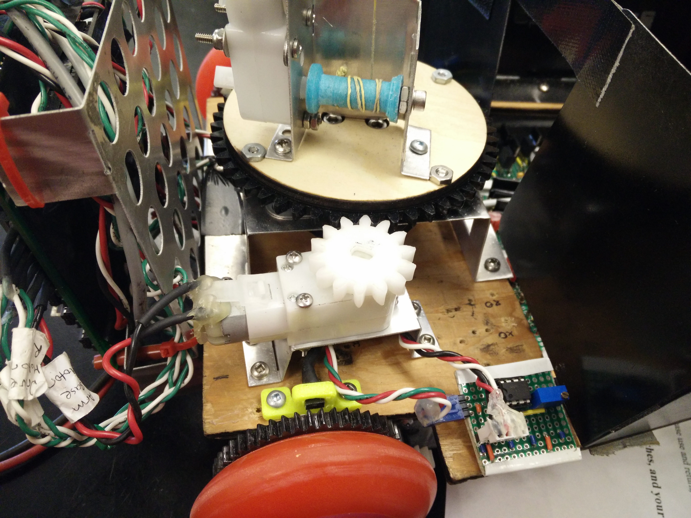
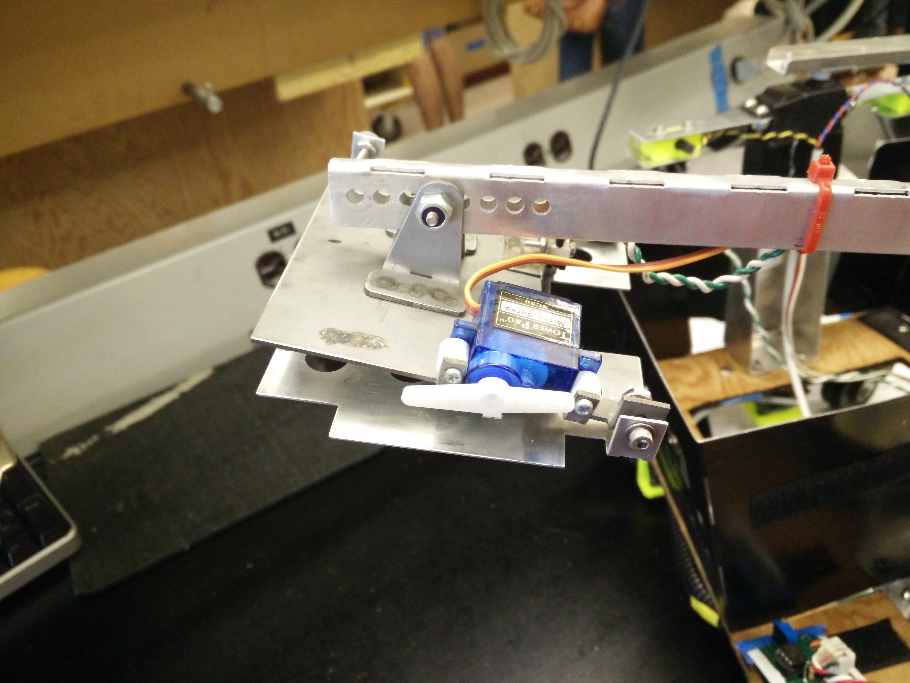

Overview
H.A.L.P. is powered by a 16v Lithium-Polymer Battery. Signal processing and I/O is done using the TINAH microcontroller (similar to Arduino). In addition electrical circuits are used to for sensory input and for motor output.
Motor driving circuits
Pulse Width Modulation control is supplied to the motors by H-Bridge circuits.
IR sensing
A 10kHz infrared beacon indicated the position of the final pet. QSD124 phototransistors were used to detect the signal. An analog signal processing circuit determined the strength of the IR signal and thus position relative to the beacon.
Drivetrain
H.A.L.P. is driven and steered differentially by two geared Barber-Colman motors. The drive gear (attached to the motor shaft) is made out of Delrin: a durable low friction plastic, while the wheel gear is made out of acrylic. The wheels used are rubber rollerblade wheels and provide fantastic grip on the painted plywood surface. A 4:1 gear ratio allows the robot to move swiftly while ensuring enough torque is fed to the wheels to climb up the playing surface ramp.
Chassis
1/4 inch lasercut plywood was used for the chassis because it is lightweight, durable and allows the use of wood screws for easy fastening and unfastening of components. All brackets were either 3D printed using ABS plastic or waterjet and bent out of lightweight aluminum sheet metal.
Main Arm
The main pet pickup arm uses a spool system to raise and lower the arm with a geared motor to control the base movement of the arm. Arm positions are measured using potentiometers located at the pivot and base of the arm.
Pickup/Release Plate uses a steel top plate (magnetic) to pick up the pets and an aluminum (non-magnetic) bottom plate to release the pets. A microswitch located on the top plate detects if the plates are pressed together and indicates that a pet has been picked up. The servo turns the cam to separate the two plates and release the pet.
Front Structure
Front structure houses the infrared sensors (3D printed and shown in yellow), the plate used to pick up the 4th pet and the "fishing rod" used to save the final buried pet.
Example
Check out our code repo to look at our long but wonderful code!